UNIT 3
第三单元
古诗文：选择、坚守与历史眼光
单元导语
本单元课文都是传统名篇，内涵丰富而深刻：有的论述人生的理性抉择，有的叙述不畏强暴的故事，有的描述少年时求学的艰辛，有的则是不同时代词人们抒发的壮志豪情。阅读这些经典作品，要善于汲取思想精华，获得情感的激励，在自己的人生旅途中，学会选择和坚守。
9 鱼我所欲也
预 习
◎ 你还记得八年级学过的《〈孟子〉三章》吗？回顾一下文章的主要内容
和语言特色。
◎ 熟读课文，尝试用自己的话说说课文大意。
鱼，我所欲也；熊掌，亦我所欲也。二者不可得兼，舍鱼而取熊掌者也。生，亦我所欲也；义，亦我所欲也。二者不可得兼，舍生而取义者也。生亦我所欲，所欲有甚于生者，故不为苟得 b也；死亦我所恶 c，所恶有甚于死者，故患 d有所不辟 e也。如使 f人之所欲莫甚于生，则凡可以得生者何不用也 g ？使人之所恶莫甚于死者，则凡可以辟患者何不为也？由是则生而有不用也，由是则可以辟患而有不为也。是故所欲有甚于生者，所恶有甚于死者。非独贤者有是心 h也，人皆有之，贤者能勿丧 i耳。
一箪食，一豆 j羹 k，得之则生，弗得则死。呼尔而与之 l，行道之人弗受；蹴 m尔而与之，乞人不屑 n也。万钟 o则不辩 p礼义而受之，万钟于我何加 q焉！
a 选自《孟子·告子上》（《孟子译注》，中华书 j 〔豆〕古代盛食物的一种容器，形似高脚盘。局1960年版）。题目是编者加的。 k 〔羹（gēng）〕用肉（或肉菜相杂）调和五味
b 〔苟得〕苟且取得。这里是苟且偷生的意思。 做的粥状食物。
c 〔恶（wù）〕讨厌，憎恨。 l 〔呼尔而与之〕意思是没有礼貌地吆喝着给他。
d 〔患〕祸患，灾难。 尔，用作后缀。
e 〔辟〕同“避”，躲避。 m 〔蹴（cù）〕踩踏。
f 〔如使〕假如，假使。 n 〔不屑〕认为不值得，表示轻视而不肯接受。
g 〔何不用也〕什么（手段）不用呢? o 〔万钟〕优厚的俸禄。钟，古代的一种量器。
h 〔是心〕这种心。 p 〔辩〕同“辨”，辨别。
i 〔丧〕丧失。 q 〔何加〕有什么益处。
为宫室之美、妻妾之奉 a、所识穷乏者得我与 b ？乡为身死而不受 c，今为宫室之美为之；乡为身死而不受，今为妻妾之奉为之；乡为身死而不受，今为所识穷乏者得我而为之：是亦不可以已 d乎？此之谓失其本心 e。
思考探究
一 本文注重推理，逻辑严密。根据课文内容理解作者的论证思路，把下面的
图表补充完整。
ዝඋ ᒼ᱓Ꮻԩཻଂ ଢѣག
ਫ਼൘దၵ̆ၷᏨĠˀ˞ᔥ४
᭧
̡ᄋద˨Ὂ
᥋ေ ਫ਼൘ᖆၵ̆ၷĠ͵ˀၹĠదˀၹ ᠋Ꮸᑟӈ˒
Ԧ᭧
ʷኴᮼὊʷ៰ᏌĀĀᛡ᥋˨̡ऴԪĀĀ
᭧
˶̡ˀࡘ
ˡΓ ӈܿХవॷ
Ԧ᭧
二 反复朗读并背诵课文。根据课文的具体内容，说说你对“本心”的理解。
积累拓展
三 辨析下列各组加点词的意义和用法。
1. 所欲有甚于4 生者
万钟于4 我何加焉
2. 则凡可以辟患者何不为4 也
乡为4 身死而不受
a 〔奉〕侍奉。 c 〔乡为身死而不受〕先前为了“礼义”，宁愿死
b 〔所识穷乏者得我与〕所认识的穷困的人感激 也不接受施舍。乡，同“向”，先前、从前。我吗？得，同“德”，感恩、感激。与，同 d 〔已〕停止。“欤（yú）”，语气词。 e 〔本心〕本性。这里指人的羞恶之心。
3. 呼尔而与4 之，行道之人弗受
所识穷乏者得我与4
四 在中华民族历史上，无数仁人志士都把“舍生取义”奉为人生准则，你能
举出几个事例吗？在今天，又该如何理解“舍生取义”呢？
五 孟子善于运用日常生活中的事例进行类比说理，使抽象的道理变得浅显易
懂。学习这种方法，写一段话，说明一个道理。
理解又可分两方面来说。（1）关于词句的；（2）关于全文的。关于词句的理
解，不外乎从词义的解释入手，次之是文法知识的运用。词义的解释如不正确，
不但读不通眼前的文字，结果还会于写作时露出毛病。……词义的解释正确了，
逐句的文句已可通解了，那么就可说能理解全文了吗？尚未。文字的理解，最要
紧的是捕捉大意或要旨，否则逐句虽已理解，对于全文仍难免有不得要领之弊。
一篇文字，全体必有一个中心思想，每节每段也必有一个要旨。文字虽有几千字
或几万字，其中全文中心思想与每节、每段的要旨，却是可以用一句话或几个字
来包括的。阅读的人如不能抽出这潜藏在文字背后的真意，只就每句的文字表面
支离求解，结果每句是懂了，而全文的真意所在仍是茫然。
——夏丏尊《关于国文的学习》
10* 唐雎不辱使命
阅读提示
本文记叙了强大的秦国与弱小的安陵国之间的一场外交斗争。秦王提出以五百里地换取安陵，其实就是想吞并。唐雎临危受命，出使秦国，最终不辱使命，维护了国家的利益和尊严。阅读课文，想一想，唐雎为什么能让秦王屈服？
秦王 b使人谓安陵君 c曰：“寡人欲以五百里之地易 d安陵，安陵君其 e许寡人！”安陵君曰：“大王加惠 f，以大易小，甚善；虽然，受地于先王，愿终守之，弗敢易！”秦王不说。安陵君因使唐雎使于秦。
秦王谓唐雎曰：“寡人以五百里之地易安陵，安陵君不听寡人，何也？且秦灭韩亡魏，而君以五十里之地存者，以君为长者，故不错意 g也。今吾以十倍之地，请广于君 h，而君逆寡人者，轻寡人与？”唐雎对曰：“否，非若是也。安陵君受地于先王而守之，虽千里不敢易也，岂直 i五百里哉？”
秦王怫然 j怒，谓唐雎曰：“公 k亦尝闻天子之怒乎？”唐雎对曰：“臣未尝闻也。”秦王曰：“天子之怒，伏尸 l百万，流血千里。”唐雎曰：“大王尝闻布
a 选自《战国策·魏策四》（《战国策笺证》，上 d〔易〕交换。海古籍出版社2006年版）。题目是后人加的。 e〔其〕表示祈使语气。唐雎，战国末期人。不辱使命，意思是没有 f〔加惠〕施与恩惠。辜负出使任务。辱，辱没、辜负。《战国策》 g〔错意〕在意。错，同“措”。是西汉刘向根据战国时期史料整理编辑的， h〔请广于君〕意思是让安陵君扩大领土。广，共33篇，分国编次。 增广、扩充。
b〔秦王〕指嬴政，即后来的秦始皇。 i〔岂直〕哪里只是。
c〔安陵君〕安陵国的国君。安陵是一个小国， j〔怫（fú）然〕愤怒的样子。在今河南鄢（yān）陵西北，原是魏国的附属 k〔公〕对人的敬称。国，魏襄王封其弟为安陵君。 l〔伏尸〕横尸在地。
衣 a之怒乎？”秦王曰：“布衣之怒，亦免冠徒跣 b，以头抢 c地尔。”唐雎曰：“此庸夫之怒也，非士 d之怒也。夫专诸之刺王僚也，彗星袭月 e ；聂政之刺韩傀也，白虹贯日 f ；要离之刺庆忌也，仓鹰击于殿上 g。此三子者，皆布衣之士也，怀怒未发，休祲降于天 h，与臣而将四矣 i。若士必 j怒，伏尸二人，流血五步，天下缟素 k，今日是也。”挺 l剑而起。
秦王色挠 m，长跪而谢之 n曰：“先生坐！何至于此！寡人谕 o矣：夫韩、魏灭亡，而安陵以五十里之地存者，徒!6以有先生也。”
思考探究
一 熟读课文，找出描写秦王情绪变化的词语，说说秦王为什么会有这些变化。
二 本文通过人物语言塑造了唐雎这一“士”的形象。仿照示例，另选一处人
物语言加以分析。
示例：
安陵君受地于先王而守之，虽千里不敢易也，岂直五百里哉？
a 〔布衣〕平民。古代没有官职的人穿麻布衣 吴王僚的儿子，在僚被杀后，逃到卫国，吴服，所以称布衣。 王阖闾派要离去把他杀了。仓，同“苍”。
b〔免冠徒跣（xiǎn）〕摘下帽子，光着脚。徒， h〔怀怒未发，休祲（jìn）降于天〕心里的愤裸露。跣，赤脚。 怒没发作出来，上天就降示征兆。休祲，吉
c〔抢（qiāng）〕碰，撞。 凶的征兆。这里偏指凶兆。休，吉祥。祲，
d〔士〕这里指有胆识有才能的人。 不祥。
e〔专诸之刺王僚也，彗星袭月〕专诸刺杀吴王 i〔与臣而将四矣〕加上我，将变成四个人了。僚时，彗星的尾巴扫过月亮。专诸，春秋时 唐雎暗示秦王，自己将效法专诸、聂政、要离吴国人。公子光（即后来的吴王阖闾［hélǘ］） 三人行刺。想杀僚自立，假意宴请，让专诸借献鱼之机 j〔必〕一定。刺杀了僚。“彗星袭月”和下文的“白虹贯 k〔缟（gǎo）素〕白色丧服。这里用作动词，日”“仓鹰击于殿上”等自然现象，古人认为 指穿白色丧服。 缟、素，都是白色的绢。是发生灾变的征兆。 l〔挺〕拔。
f〔聂政之刺韩傀（guī）也，白虹贯日〕聂政刺 m〔色挠〕面露胆怯之色。杀韩傀时，白色的长虹穿日而过。聂政，战 n〔长跪而谢之〕直身跪着，向唐雎道歉。古人国时韩国人。韩傀是韩国的相。韩国大夫严 席地而坐，坐时两膝着地，臀部落在脚跟上。仲子同韩傀有仇，请聂政去刺杀了韩傀。 长跪则是把腰挺直，以表示敬意。
g〔要（yāo）离之刺庆忌也，仓鹰击于殿上〕 o〔谕〕明白，懂得。要离刺杀庆忌时，苍鹰扑到宫殿上。庆忌是 !6〔徒〕只，仅仅。
面对秦王的傲慢自大和咄咄逼人，唐雎沉着应对。先重复安陵君已经说过的理
由“受地于先王”——不肯易地是要守先人之土；进而以“虽……岂……”的措辞，
强化了“守土不易地”的立场，同时揭露秦王以空言索人国土的蛮横无理。不过，作
为外交辞令，唐雎的话只说己方态度，并未直斥暴秦，义正词严，有理有节。
三 朗读下列各组句子，体会加点词的语气。
1. 安陵君不听寡人，何也4 ？
此庸夫之怒也，非士之怒也4 。
2. 虽千里不敢易也，岂直五百里哉4 ？
予尝求古仁人之心，或异二者之为，何哉4 ？
3. 大王尝闻布衣之怒乎4 ？
士别三日，即更刮目相待，大兄何见事之晚乎4 ！
4. 与臣而将四矣4 。
甚矣4 ，汝之不惠！
四 用现代汉语翻译下列句子，注意加点词语的意义。
1. 寡人欲以五百里之地易4 安陵，安陵君其许4 寡人！
2. 虽然4 ，受地于先王，愿终守之，弗敢易！
3. 今吾以十倍之地，请广4 于君，而君逆4 寡人者，轻寡人与？
4. 夫韩、魏灭亡，而安陵以五十里之地存者，徒4 以有先生也。
11 送东阳马生序
预 习
◎ 序是一种文体，有书序和赠序之分。赠序，即临别赠言。本文是作者
写给同乡后学马生的临别赠言。想一想，作为前辈学人，作者会对后学说些什么？
◎ 诵读课文，借助注释理解文意，体会作者的良苦用心，从中获得有益
的启示。
余幼时即嗜学。家贫，无从致 b书以观，每假借 c于藏书之家，手自笔录，计日以还。天大寒，砚冰坚，手指不可屈伸，弗之怠 d。录毕，走 e送之，不敢稍逾约 f。以是 g人多以书假余，余因得遍观群书。既加冠 h，益慕圣贤之道。又患无硕师 i名人与游，尝趋 j百里外，从乡之先达执经叩问 k。先达德隆望尊 l，门人弟子填 m其室，未尝稍降辞色 n。余立侍左右，援疑质理 o，俯
a 选自《宋濂全集》卷三十一（人民文学出版 时男子二十岁举行加冠（束发戴帽）仪式，社2014 年版）。东阳，今属浙江。生，对晚 表示已经成人。后人常用“冠”或“加冠”辈读书人的称呼。宋濂（1310—1381），字景 表示年已二十。濂，号潜溪，浦江（今属浙江）人，元末明 i 〔硕师〕学问渊博的老师。初文学家。 j 〔趋〕快步走。
b 〔致〕得到。 k 〔从乡之先达执经叩问〕拿着经书向同乡有道
c 〔假借〕借。 德有学问的前辈请教。叩问，请教。
d 〔弗之怠〕即“弗怠之”，不懈怠，指不放松 l 〔德隆望尊〕道德声望高。抄录书。 m 〔填〕挤满。
e 〔走〕跑。 n 〔稍降辞色〕把言辞和脸色略变得温和一些。
f 〔逾约〕超过约定期限。 稍，略微。辞色，言辞和脸色。
g 〔以是〕因此。 o 〔援疑质理〕提出疑难，询问道理。援，引、
h 〔既加冠（guān）〕加冠之后，指已成年。古 提出。质，询问。
身倾耳以请 a ；或遇其叱咄 b，色愈恭，礼愈至 c，不敢出一言以复 d ；俟 e其欣悦，则又请焉。故余虽愚，卒获有所闻。
当余之从师也，负箧曳屣 f行深山巨谷中。穷冬 g烈风，大雪深数尺，足肤皲裂 h而不知。至舍 i，四支僵劲 j不能动，媵人 k持汤沃灌 l，以衾拥覆，久而乃和 m。寓逆旅，主人日再食 n，无鲜肥滋味之享。同舍生皆被绮绣 o，戴朱缨 p宝饰之帽，腰 q白玉之环，左佩刀，右备容臭 r，烨然 s若神人；余则缊袍敝衣 t处其间，略无慕艳 u意，以中有足乐者，不知口体之奉不若人也 v。盖余之勤且艰若此。今虽耄老 w，未有所成，犹幸预君子之列 x，而承天子之宠光 y，缀 z公卿之后，日侍坐备顾问 @7，四海亦谬称其氏名 @8，况才之过于余者乎？
今诸生学于太学 @9，县官 #0日有廪稍 #1之供，父母岁有裘葛 #2之遗 #3，无冻馁 #4之患矣；坐大厦之下而诵诗书，无奔走之劳矣；有司业、博士 #5为之师，未有问而不告、求而不得者也；凡所宜有之书，皆集于此，不必若余之手录，假诸人 #6而后见也。其业有不精、德有不成者，非天质之卑，则心不若余之专
a 〔俯身倾耳以请〕弯下身子，侧着耳朵来请 u 〔慕艳〕羡慕。教。表示专心而恭敬。 v 〔以中有足乐者，不知口体之奉不若人也〕因
b 〔叱咄（duō）〕训斥，呵责。 为内心有值得快乐的事，不觉得吃的穿的不
c 〔至〕周到。 如人。口体之奉，指吃穿的供给。
d 〔复〕回答，答复。这里是辩解的意思。 w 〔耄（mào）老〕年老。语出《礼记·曲礼
e 〔俟（sì）〕等待。 上》：“八十九十曰耄。”
f 〔负箧曳屣（xǐ）〕背着书箱，拖着鞋子。 x 〔预君子之列〕意思是做了官。预，参与。君
g 〔穷冬〕深冬，隆冬。穷，极。 子，这里指有官位的人。
h 〔皲（jūn）裂〕皮肤因寒冷干燥而开裂。 y 〔宠光〕恩宠光耀。
i 〔舍〕这里指客舍。 z 〔缀〕跟随。
j 〔四支僵劲〕四肢僵硬。支，同“肢”。 @7 〔日侍坐备顾问〕每天在皇帝座位旁边侍奉，
k 〔媵（yìnɡ）人〕侍婢。这里指旅舍中的仆役。 准备接受询问。
l 〔持汤沃灌〕拿了热水来洗濯。汤，热水。沃，浇。 @8 〔谬称其氏名〕错误地称说我的姓名。这是自
m 〔和〕暖。 谦的说法。
n 〔寓逆旅，主人日再食（sì）〕寄居在旅店，店 @9〔太学〕我国古代设在京城的最高学府。元、主人每天供给两顿饭。逆旅，旅店。食，供 明、清时期不设太学，设国子学或国子监。养，给……吃。 #0〔县官〕这里指朝廷。
o 〔被绮绣〕穿着华丽的丝绸衣服。被，同 #1〔廪稍〕公家按时供给的粮食。“披”。绮，有花纹或图案的丝织品。绣，绣 #2〔裘葛〕冬天的皮衣和夏天的葛衣。泛指四时花的衣服。 衣服。葛，多年生草本植物，茎皮可制葛布。
p 〔缨〕系帽的带子。 这里指葛衣，即用葛布制成的夏衣。
q 〔腰〕用作动词，在腰间佩戴。 #3〔遗（wèi）〕给予，赠送。
r 〔容臭〕香袋。臭，香气。 #4〔馁（něi）〕饥饿。
s 〔烨（yè）然〕光彩鲜明的样子。 #5〔司业、博士〕都是古代学官名。
t 〔缊（yùn）袍敝衣〕破旧的衣服。缊，乱麻。 #6 〔假诸人〕即“假之于人”，向别人借。诸，敝，破。 相当于“之于”。
耳，岂他人之过哉？
东阳马生君则，在太学已二年，流辈 a甚称其贤。余朝京师 b，生以乡人子谒 c余，撰长书以为贽 d，辞甚畅达。与之论辨 e，言和而色夷 f。自谓少时用心于学甚劳，是可谓善学者矣。其将归见其亲也，余故道为学之难以告之。谓余勉乡人以学者，余之志也；诋 g我夸际遇之盛而骄乡人 h者，岂知予者哉？
思考探究
一 熟读课文，背诵前两段。作者写这篇文章，讲述自己的求学经历，赠送同
乡后学，主要是想表达什么意思？
二 在求学过程中，作者遇到了哪些困难？他是如何克服的？找出其中的细
节，说说最让你感动的地方。
三 课文多处运用对比手法，找出来，谈谈这样写的好处。
积累拓展
四 解释下列加点词的含义。
1. 录毕，走送之，不敢稍4 逾约
2. 色愈恭，礼愈至4
3. 媵人持汤4 沃灌
4. 主人日再4 食
5. 父母岁有裘葛之遗4
五 作者家贫嗜学，乐以忘忧，在老师面前毕恭毕敬。我们现在应该如何看待
这种学习态度和从师尊师的表现？
a 〔流辈〕同辈。 f 〔言和而色夷〕言辞谦和，脸色平易。
b 〔朝京师〕这里指退休后进京朝见皇帝。 g 〔诋〕诋毁，毁谤。
c 〔谒（yè）〕拜见。 h 〔夸际遇之盛而骄乡人〕夸耀自己的际遇好
d 〔撰长书以为贽（zhì）〕写了一封长信作为礼 （指得到皇帝的赏识重用）而在同乡面前表示物。贽，初次进见尊者时所持的礼物。 骄傲。
e 〔论辨〕议论辩驳。辨，同“辩”。
12 词四首
预 习
◎ 词又称“长短句”，句式长短不一，讲究韵律，能自由表达思想感情。
回顾学过的有关知识，想想词与诗有什么不同。
◎ 反复诵读这四首词，感受词的音韵美，并注意体会各首词中蕴含的
情感。
渔家傲·秋思a a 选自《范仲淹全集》（凤凰出版
社2004年版）。宋仁宗康定元年
（1040），宋与西夏交兵，范仲
范仲淹 淹被任命为陕西经略副使兼知
延州，担起西北边疆防卫重任。
b c 这首词即作于这一时期。
塞下 秋来风景异，衡阳雁去 无留意。 b 〔塞下〕边界要塞之地。这里指
四面边声 d连角起，千嶂 e里，长烟落日孤城 当时的西北边疆。
c 〔衡阳雁去〕即“雁去衡阳”，
闭。 浊酒一杯家万里，燕然未勒归无计。
为符合格律而倒置。秋季北雁
羌管悠悠霜满地，人不寐，将军白发征夫 f泪。 南飞，传说至湖南衡阳城南的
回雁峰而止。
d 〔边声〕边塞特有的声音，如大
风、羌笛、马嘶的声音。
e 〔千嶂〕层峦叠嶂。嶂，直立似
屏障的山峰。
f 〔征夫〕出征的士兵。江城子·密州出猎a a 选自《东坡乐府笺》卷一（上
海古籍出版社2009年版）。江城
子，词牌名。密州，今山东诸
苏 轼 城。宋神宗熙宁七年（1074），
苏轼由杭州通判迁为密州知州。
这首词是次年冬天与同僚出城
老夫 b聊 c发少年狂，左牵黄，右擎苍 d， 打猎时所作。
锦帽貂裘，千骑 e卷平冈。为报倾城随太守 f， b 〔老夫〕作者自称。
c 〔聊〕姑且，暂且。
亲射虎，看孙郎 g。 酒酣胸胆尚开张 h。鬓
d 〔左牵黄，右擎苍〕左手牵着黄
微霜 i，又何妨！持节云中，何日遣冯唐 j ？ 犬，右臂托着苍鹰。黄，指黄
会 k挽雕弓 l如满月，西北望，射天狼 m。 犬。擎，举着。苍，指苍鹰。
e 〔千骑〕形容骑马的随从很多。
骑，一人一马的合称。
f 〔为报倾城随太守〕为我报知全
城百姓，使随我出猎。
g 〔亲射虎，看孙郎〕即“看孙郎
亲射虎”。孙郎，指孙权。据
《三国志·吴书·吴主传》，孙
权曾经“亲乘马射虎”。这里是
作者自喻。
h 〔胸胆尚开张〕胸襟开阔，胆气
豪壮。 尚，还。开张，开阔雄伟。
i 〔鬓微霜〕鬓角稍白。
j 〔持节云中，何日遣冯唐〕朝廷
什么时候派遣冯唐到云中来赦
免魏尚呢？云中，古郡名，治
所在今内蒙古托克托东北。《史
记·张释之冯唐列传》载：汉文
帝时，云中郡守魏尚抵御匈奴有
功，却因为上报战功时多报了六
颗首级而获罪削职。冯唐为之向
文帝辩白此事，文帝即派冯唐持
节去赦免魏尚，复为云中郡守。
这里作者以魏尚自许。
k 〔会〕终将。
l 〔雕弓〕饰以彩绘的弓。
m 〔天狼〕星名。传说天狼星“主
侵掠”（《晋书·天文志》）。《楚
辞·九歌·东君》：“青云衣兮白
霓裳，举长矢兮射天狼。”词中
喻指侵扰西北边境的西夏军队。破阵子·为陈同甫赋壮词以寄之a a 选自《稼轩词编年笺注》卷
二（上海古籍出版社1993 年
版）。破阵子，词牌名。陈同甫
辛弃疾 （1143—1194），名亮，婺（wù）
州永康（今属浙江）人，南宋
思想家、文学家。赋，写作。
醉里挑灯看剑，梦回 b吹角连营 c。八百 壮词，雄壮的词。
里分麾下炙 d，五十弦翻塞外声 e，沙场 f秋 b 〔梦回〕梦中回到。
c 〔连营〕连在一起的众多军营。
点兵。 马作的卢飞快 g，弓如霹雳 h弦惊。 d 〔八百里分麾（huī）下炙（zhì）〕
了却 i君王天下事 j，赢得生前身后名。可怜白 意思是，把酒食分给部下享用。
发生！ 八百里，指牛，这里泛指酒食。
《世说新语·汰侈》 载：晋王
恺（kǎi）有良牛，名“八百里
驳”。王济与之比射，以此牛为
赌物，恺输，杀牛作炙。麾下，
军旗下面，指部下。炙，烤熟
的肉食。
e 〔五十弦翻塞外声〕五十弦，原
指瑟，这里泛指乐器。翻，
演奏。塞外声，指悲壮粗犷
的军乐。
f 〔沙场〕战场。
g 〔马作的（dì）卢飞快〕战马像
思考探究 的卢马那样跑得飞快。的卢，
额部有白色斑点的马。《三国
志·蜀书·先主传》注引《世
语》：刘备在荆州遇险，他所
骑的的卢马“一踊三丈”，助他
脱险。
h 〔霹雳〕响雷，震雷。这里喻指
射箭时弓弦的响声。
i 〔了却〕了结，完成。
j 〔天下事〕这里指收复北方失地
的国家大事。满江红a a 选自《秋瑾集》（上海古籍出版
社1979 年版）。满江红，词牌
名。秋瑾（1875—1907），字璿
秋 瑾 （xuán）卿，号竞雄，别署鉴湖
女侠，山阴（今浙江绍兴）人，
中国民主革命烈士。本词作于光
小住京华，早又是中秋佳节。为篱下黄 绪二十九年（1903），时作者与
花开遍，秋容如拭 b。四面歌残终破楚 c，八 丈夫寓居北京。秋瑾目睹民族危
d f 机的深重和清政府的腐败，决心
年风味 徒思浙 e。苦将侬 强派作蛾眉 g， 寻求救国之道，后于1904年东渡
殊 h 未屑 i ！ 身不得，男儿列 j，心却 日本留学。
比，男儿烈。算平生肝胆，因人常热。俗子 b 〔秋容如拭〕秋天的景色仿佛擦拭
k 过一般明净。拭，擦。
胸襟谁识我？英雄末路当磨折。莽红尘 何 c 〔四面歌残终破楚〕《史记·项羽
处觅知音？青衫湿 l ！ 本纪》载：公元前202年楚汉交
兵时，楚军被围在垓（ɡāi）下
（今安徽灵璧东南），项羽夜闻
四面汉军都唱楚歌，以为楚地尽
失，丧失信心，引兵突围至乌江
（今安徽和县东北），自刎而死。
后用“四面楚歌”比喻四面受
敌、孤立无援的困境。
d 〔八年风味〕秋瑾1896年在湖南
结婚，至写这首词时，恰为
八年。
e 〔思浙〕思念浙江故乡。
f 〔侬〕我。
g 〔蛾眉〕指女子细长而略弯的眉
毛。这里借指女子。
h 〔殊〕很，甚。
i 〔未屑〕不屑，轻视。意思是不
甘心做女子。
j 〔列〕属类，范围。
k 〔莽红尘〕莽莽人世。
l 〔青衫湿〕指因悲叹无知音而落
泪。语出白居易诗《琵琶行》：
“江州司马青衫湿。”
1939 年，周恩来在浙江绍兴题词：“勿忘鉴湖女侠之遗风，
望为我越东女儿争光！”思考探究
一 《渔家傲·秋思》是范仲淹镇守西北边陲时军中生活的真实写照。发挥想
象，用自己的话描述作者笔下的情景，并说说这首词表达的思想感情。
二 《江城子·密州出猎》中，“亲射虎”“遣冯唐”“射天狼”的典故分别表达
了什么意思？它们与贯穿全词的“狂”有什么关联？
三 辛弃疾说自己写《破阵子·为陈同甫赋壮词以寄之》是“赋壮词”，试结
合作品说说你的理解。
四 《满江红》（小住京华）结尾长叹“青衫湿”。结合作品内容和写作背景，
说说词作抒发了作者怎样的思想感情。
积累拓展
五 背诵并默写本课的四首词。
六 仿照示例，从课文中另选几处富有表现力的词句进行点评。
示例：
“四面边声连角起”中的“边声”，指边塞特有的种种声音，凄厉而容易引发人的
怀乡之情。“边声”以“四面”来形容，更显得无所不在，充塞天地之间，虽不想
听却做不到。下面再接上“连角起”，进一步写出这些声音是伴随着军营的号角声
发出的，在凄凉之外更添一层悲壮。
词
词是唐五代兴起的一种配合音乐歌唱的新体诗。它在隋唐之际已经产生，中
唐以后逐渐有较多文人从事创作，晚唐五代趋于繁荣，而极盛于宋代。在唐五代
时，一般称为“曲”“曲子”“曲子词”。后来才称为“词”，又称“乐府”“近
体乐府”“诗余”“长短句”等。
——顾易生写作：布局谋篇
布局谋篇
布局谋篇是在审题立意、选材之后，对材料的组织、结构的安排等做整体谋
划。如果将谋划的内容简要地记下来，就是列提纲。列提纲有助于理清思路，把握全局，避免写作时信马由缰，偏离文章的主题。
那么，怎样才能更好地布局谋篇呢？
首先，要围绕文章所要表达的中心，对材料作全面的梳理，拟出全文的框架。材料的安排要各得其所，哪个在前，哪个在后，层次结构要清楚，即所谓“言之有序”。某个材料放在什么位置，是详写还是略写，要依据与主题的契合度、可能发挥的作用等来安排。这时可利用一些形象化的图示帮助构思，拟出合理的框架。比如，以《家乡的名片》为题，就可以用下边这个图示让自己的思路明晰起来：
थናᄊܱॎ ౽ᛤӝ
थናᄊЯ ౽थና ౽᮳ΰ
ࠒ˹ᄊ
Րྟ
थናᄊԋԾ ౽Ր̡ ĀĀ
थናळԧᄊ ౽ԋԾ
Х̵ᐏਇ
可以用并列的结构，依次写家乡的街区、建筑、风俗、名人、历史等。可以就其中某个方面进行详写，比如，将家乡的建筑作为重点，从建筑的外形、内涵、历史等角度详加介绍，其他方面则一笔带过。这样有详有略，繁简得当，能给人留下更深刻的印象。
其次，在拟定框架之后列出写作提纲。写作提纲是在简单的框架图示的基础上，进一步用简要的文字明确文章的全貌，包括怎样开头、怎样结尾、中间部分怎样展开、如何承接与过渡等，要尽可能考虑清楚。比如，文章开头是作者叙述的起点，往往也决定了文章的“调子”。可以开门见山，开宗明义；也可曲折入题，借诗词歌赋渲染气氛，借故事、道理等引出主题。文章的结尾，可直抒情怀，深化主题；可出人意料，不落窠臼；可含蓄蕴藉，令人回味；等等。总之，要根据文章主旨、体裁、题材等做全面考虑。完善的提纲有助于我们一气呵成地写完全文，避免出现边写边改以致文气不畅的情况。
写作实践
一 古老的建筑、独特的物产、美丽的传说……这些都可能是你家乡的名片。试以
《家乡的名片》为题，写一篇作文。不少于600字。
提示：
1. 在你熟悉的范围内确定写作的具体内容，或景点，或物产，或名人，或
民风民俗，所选对象要足以代表家乡的某种文化、风貌或精神。
2. 前面的图示可以作为参考，看看如何进一步展开，使内容更加丰富。
3. 在图示的基础上列出写作提纲，使文章脉络清晰，结构完整。
二 阅读下面的材料，从中选择你感触最深的一点，自拟题目，自定文体，把你的故
事或感悟写出来。不少于600字。
孩子拿着橘子问：“妈妈，为什么吃橘子要剥皮呢？”“那是橘子在告诉你，你
想要得到的东西，不是伸手就能得到，而是要付出劳动的。”“橘子里的果肉为什么
是一瓣儿一瓣儿的呢？”“那是橘子在告诉你，生活的甘甜和幸福，是用来慢慢享
用的。还是为了告诉你，你手中的东西，不能独自享用，要懂得与别人分享。”
提示：
1. 认真分析材料中“付出”“享用”“分享”的含义，确定文章的立意。
2. 根据立意，搜集相关材料，并确定所用的材料。
3. 斟酌材料使用的先后与详略，列出写作提纲，并据此写作。
三 我们每天都在路上。生活路上有欢笑，学习路上有艰辛，交友路上有甘甜，追求
路上有付出。在路上，我们有坚实的脚步，有丰富的体验，有无尽的期盼与思
考。请以《在路上》为题，自定文体，写一篇作文。不少于600字。
提示：
1. 认真审题，想一想“在路上”的含义，确定合适的立意。
2.“在路上”可能引发你很多联想。构思时要思考材料与立意的契合度，恰
当选取材料。
3. 根据布局谋篇的要求，先与同学交流自己的写作思路，互相提出改进完
善的建议，再根据同学的建议，列出写作提纲，完成写作。
名著导读：《儒林外史》——讽刺作品的阅读
《儒林外史》 讽刺作品的阅读
……烛幽索隐，物无遁形，凡官师，儒者，名士，山人，
间亦有市井细民，皆现身纸上，声态并作，使彼世相，如在
目前，惟全书无主干，仅驱使各种人物，行列而来，事与其
来俱起，亦与其去俱讫，虽云长篇，颇同短制；但如集诸碎
锦，合为帖子，虽非巨幅，而时见珍异，因亦娱心，使人刮
目矣。
——鲁迅
他（吴敬梓）所作的《儒林外史》不仅描写了一个
时代的知识分子的生活命运，而且反映了以他为代表的先进
知识分子对社会理想的探索和追求。
——陈美林《儒林外史》插图 程十发作
“儒林”，指封建社会里“读书人”或“士人”这一群体。历代正史皆相沿设有“儒林传”，记述各朝有学问、有品德的大儒。吴敬梓的《儒林外史》却与此不同，刻画的是“儒林”的另一些为正史官书所不载的面相。
吴敬梓出身于安徽全椒一个“世代书香”的名门望族。全椒吴氏在清初曾经显赫一时，“五十年中，家门鼎盛”，到了吴敬梓生活的雍正、乾隆时期则已逐渐败落。也正是这一坠入困顿的过程让吴敬梓窥破了世间的真相，他“有瑰意与琦行，无捷径以窘步”，自36岁后便绝意于科举，也拒绝朝廷的征辟，不再走传统士人出仕为宦、显亲扬名的道路，而是移居于南京，将自己的才华、情感和对社会的深沉思考，贯注于《儒林外史》的创作之中。
小说并没有贯穿全书的中心人物和主要情节，而是由众多故事连缀而成，表现的是普通士人日常生活中的生存状态与精神世界。书中的大多数人物，熙熙而来，攘攘而去。或唯利是图，自甘下流；或貌似君子，内心卑污；或故弄玄虚，欺世盗名；或倚仗权势，横暴不法；或假作清高，实则鄙陋；或终老科场，迂腐可笑：他们全无读“圣贤书”的儒生应有的学识与品格，而是为功名利禄所裹挟，丑态毕露。通过描绘这幅士林的“群丑图”，展现功名利禄对读书人灵魂的毒害，作者清楚地表明了自己否定功名富贵的基本立场，并通过书中少数淡泊名利、恪守道德、张扬个性的贤者奇人，寄托了自己对理想社会的追求。
科举考试是隋唐以后一千多年来士人求取功名的主要途径。在《儒林外史》中科举
64 名著导读
制成为作者揭露和讽刺的主要对象。在作者笔下，这个制度已经极度腐朽，不再能够选拔真正的人才，反而成为蒙蔽、扭曲士人灵魂的工具。如书中的范进，被吹捧为能作“天地间之至文”，竟连北宋大文学家苏轼是谁都不知道，而就是这样一个无知之徒，一旦中举，立刻成为众人艳羡的对象，集名利于一身。小说通过刻画奔走于科举道路上的众多士人形象，对封建科举制度和整个封建社会的“儒林”作出了深刻的批判。
《儒林外史》不仅具有深邃的主旨，在小说艺术上也达到了很高的境界。这部小说“秉持公心，指摘时弊”（鲁迅语），将讽刺的锋芒隐藏在含而不露、耐人寻味的叙述中，通过冷静传神的刻画，寥寥数语，便将人物形象和世俗风貌描摹得形神兼备，入木三分。鲁迅在《中国小说史略》中称之为中国古代最优秀的讽刺小说，可谓定评。
读书方法指导
讽刺文学有着悠久的历史。西方文学里的讽刺，可以追溯到古希腊的寓言和喜剧。中国文学传统里的讽刺，则导源于《诗经》的“美刺”和史传的“惩劝”，既有入木三分的揭露，也有“微而显，志而晦，婉而成章，尽而不污”（《左传·成公十四年》）的讽喻。几千年来，讽刺作家们以笔为武器，无情地揭露虚伪，鞭挞丑恶，在笑声中批判社会现实，创造了许多经典作品。阅读这些作品，要注意以下几个方面。
体会批判精神。讽刺作品中，作家塑造人物，叙述故事，锋芒所向并非个别的人，而是以之为典型，针砭时弊，揭露某种社会现象背后的荒谬本质，从而间接地表达对理想的向往。例如，《儒林外史》中刻画了许多受科举制度播弄而失魂落魄的人物形象，用意所在，是展现这种制度对人心灵的毒害，揭露科举制度本身的不合理。又如书中第四十八回写王家三姑娘绝食“殉夫”，全县读书人都以为“这样好女儿，为伦纪生色”，于是“知县祭，本学祭，余大先生祭，阖县乡绅祭，通学朋友祭，两家亲戚祭，两家本族祭，祭了一天，在明伦堂摆席……”这正是对“满本都写着两个字是‘吃人’”（鲁迅语）的封建礼教的愤怒抨击。不止于此，某些作品在讽刺丑恶的同时，也会塑造一些象征正面理想的人物，例如《儒林外史》中的王冕、杜少卿、虞育德、庄征君等。这些正面人物的嘉言懿行，恰与反面人物的丑恶举止形成强烈对比，更增强了作品的批判力量。
欣赏讽刺笔法。讽刺作品的笔法是多种多样的。在看似子虚乌有的情节和夸张变形的描写中曲折地揭示现实矛盾，这是讽刺作品常见的一种手法。例如乔纳森·斯威夫特的《格列佛游记》，写的是主人公在“大人国”“小人国”乃至“慧骃国”看似荒诞不经的漫游，讽刺的却是人间真实的世相。另一种常见的手法，则是抓住平常生活中传神的细节，以冷峻的白描直书其事。例如“范进中举”一回，写
胡屠户一巴掌治好了范进的疯病，众人一同回家，“屠户见女婿衣裳后襟滚皱了许多，一路低着头替他扯了几十回”。这一细节，作者写来不动声色，却活画出科举制度下一人飞黄腾达之后乡人亲友诚惶诚恐、毕恭毕敬、逢迎唯恐不及的画面。不同的讽刺笔法，令作品具有多姿多彩的艺术风格，同时也透露出作者对于讽刺对象的感情、立场和观点，值得在阅读时细加品味。
联系现实深入理解。讽刺作品包含着深刻的批判精神，具有强烈的爱憎情感，阅读时，要努力联系现实，深入思考。卧闲草堂本评《儒林外史》有言：“读竟乃觉日用酬酢之间，无往而非《儒林外史》。”当代也有人评论说：“《儒林外史》所讥讽的那个儒家精英世界早已不存在了，可是像小说里的人物那样说话作文、行身处世者，还大有人在，只是他们本人未必知道罢了。所以读起《儒林外史》来，多有会心处，觉得它‘和我们的世界更接近’。”《儒林外史》写于二百多年前的清代乾隆年间，为何至今仍然令读者觉得“和我们的世界更接近”？答案或许便蕴含在与现实的联系之中。当然，像《儒林外史》这样的古典作品，以及其他许多讽刺名著，毕竟年代久远，其中描写的一些具体制度和风物，今日读来或许会感到隔阂，阅读时需要适当参阅资料，以更好地理解作者讽刺的笔法，把握作品主旨。
专题探究
全班共同阅读《儒林外史》，选择自己喜欢的某个专题进行探究。选择同一专题的同学可以组成专题学习小组。以下专题供参考，也可以自行设计专题。
专题一：故事会《儒林外史》这部小说写了许多人物的故事。其中有些故事篇幅稍长，展现了人物多个性格侧面，有些故事则寥寥数笔，但都含意深远，韵味悠长。选择一个你最喜欢的故事，讲给大家听。
1. 梳理你想讲述的故事的情节，准备一个简要的提纲。
2. 讲述时既要抓住故事梗概，也要注意一些生动的细节，让自己的讲述更有吸
引力。
3. 注意体会故事中包含的作者的情感态度，努力在自己的讲述中体现出来。
专题二：《儒林外史》讽刺艺术探究《儒林外史》的讽刺艺术一向为人称道，突出表现在对人物的刻画上。小说写了数百个人物，上至达官显宦，下至贩夫走卒。他们行藏不同，性格各异，而“其人性情心术，一一活现纸上”（清闲斋老人语），让读者一见而洞彻其灵魂。选择书中的一个
66 名著导读
主要人物，细读有关章节，看看作者在刻画人物的过程中，运用了哪些讽刺手法，产生了怎样的讽刺效果。写一篇小论文，谈谈你对《儒林外史》讽刺艺术的体会。
1. 《儒林外史》善于通过对人物言行的白描揭示其精神世界，“无一贬词，而情伪毕露”（鲁迅语），阅读时，要抓住意蕴丰富的细节，准确把握作者对人物的态度。
2. 阅读时，可以边读边做批注，画出有所体会的语句，作为立论的材料；也可以阅读前人的评点或关于《儒林外史》的研究著作，深化自己的理解。
3. 《儒林外史》通过众多人物形象，对科举时代的社会生活进行了深刻的反思，这便是《儒林外史》一书为人所称道的“公心”。阅读时要注意体会。
专题三：续写故事
《儒林外史》中没有贯穿全书的核心人物。书中的人物常常在登场数回之后，旋即退场，从此不再出现。他们退场之后的生活将会如何？又会有哪些故事？选择书中的一个人物，发挥想象，续写他的故事。
1. 打开思路，天马行空，尽情想象，不妨设置一些悬念，让故事更吸引人。
2. 人物刻画和情节设计要符合其性格特征，不能脱离原著。
3.《儒林外史》特别善于通过富有意味的细节来塑造人物，揭示主题，尝试在自己的写作中学习这种笔法。
自主阅读推荐
钱锺书《围城》
“被围困的城堡，城外的人想冲进去，城里的人想冲出来。”这句法国谚语，俨然已成为当下人们调侃婚姻的流行语。这无疑要“归功”于钱锺书的小说《围城》；而《围城》中所筑起的“围城”，其实远远不止婚姻一种。
小说以主人公方鸿渐为中心，以他留学回国后的工作、恋爱、婚姻等生活经历为主线，“从他的眼里看事，从他的心里感受”，呈现出多重的围城。有人看到的，是欲望的沉沦、爱情的痛苦和婚姻的绝望。方鸿渐、唐晓芙、苏文纨、赵辛楣、曹元朗、孙柔嘉……一干男女，在情场角逐中演绎出种种可笑、可叹、可悲的风波，真所谓“理想的爱情，皆归虚妄”。有人看到的，是旧中国病态知识分子的群像。懦弱无能而尚存正气者，如方鸿渐；外表柔弱而城府颇深者，如孙柔嘉；表面文雅，实则自私刻薄者，如苏文纨；此外，还有如高松年老奸巨猾者，如韩学愈猥琐恶毒者，如顾尔谦阿谀逢迎者……各色人物粉墨登场。还有人看到的，是人性的弱点和人生的荒凉。一幕幕滑稽剧反映出世间百态，而“围城”，象征了人间的处境。所以有人说，这是
“一部探讨人的孤独和彼此间无法沟通的小说”。《围城》的意蕴，有多重解读的路径，有多维探讨的视角。
《围城》高妙的讽刺艺术也为人所称道。对于古今中外文化、文学的典故，作者信手拈来，巧为己用。比如，借用法国《列那狐》中的生花妙笔“西洋赶驴子”的典故，讥讽机关里上司驾驭下属常用的“技巧”。书中诸多比喻奇趣横生，又蕴含深刻的哲理或者一针见血的睿智。比如：“一个人的缺点正像猴子的尾巴，猴子蹲在地面的时候，尾巴是看不见的，直到它向树上爬，就把后部供给大众瞻仰，可是这红臀长尾巴是本来就有，并非地位爬高的新标识。”许多语句因此成为文艺青年中流行的“语录”。其他如作者给人物命名时透出的冷嘲、在悲悯感叹中透出的热讽，都颇耐寻味。《围城》的讽刺幽默，蕴含着作者深厚的学识素养，带着机敏的个人气质，显露出透彻的现实观照，形成独特而奇崛的风格。
小说中那具落伍的挂钟，“包含对人生的讽刺和感伤，深于一切语言、一切啼笑”，令人思忖再三，回味良久；《围城》的魅力，也恰恰如此。
乔纳森·斯威夫特《格列佛游记》
你听说过“小人国”和“大人国”的故事吗？小人国的人“身长不到6英寸”，格列佛到了那里就成了一座大山；在大人国里，一切都颠倒过来，当地居民都是巨人，格列佛则成了小小的“宠物”。这些奇特的幻想就出自英国作家乔纳森·斯威夫特的讽刺小说《格列佛游记》。
《格列佛游记》是一部有趣的奇书，它的童话式的叙事风格，极大地刺激了读者的感官和想象力。不过，童话色彩只是这部小说的表面特征，尖锐而深刻的讽刺才是其灵魂所在。作者写这部小说意在讽刺18世纪上半叶的英国现实。如描写小人国的党派之争，他们以鞋跟高低划分阵营，“高跟党”和“低跟党”尔虞我诈，争权夺利。实际上，这是挖苦英国两个争斗不休的政党。在大人国，格列佛曾扬扬自得地向国王介绍英国的历史、制度和现状，不料却招来一连串的质问。如格列佛介绍说，火药枪炮威力无比，能使敌人尸横遍野，血流成河，他愿意把制造军火的办法献给国王。国王听了非常惊诧，不理解像格列佛这样“卑微无能的小虫”为什么竟如此残忍。而在没有金钱、没有军队和警察的慧骃国，格列佛和慧骃之间的对话更成了对“人类”社会的无情鞭笞。
小说文笔简练生动，又充满幽默感。如文中写到小人国的一段官方文告，赞颂国王是“举世拥戴”的“万王之王”，格列佛则不动声色地解释道“周界约12英里”，陡然间，那“直抵地球四极”的无边领土缩为周界不过十几英里的弹丸之地。反差之大，令人捧腹。
68 名著导读
课外古诗词诵读
定风波 a 苏 轼 a 选自《东坡乐府笺》卷二
（上海古籍出版社2009 年
版）。定风波，词牌名。
三月七日b，沙湖c道中遇雨，雨具先去d，同行 b 〔三月七日〕宋神宗元丰五
年（1082）的三月七日，皆狼狈，余独不觉。已而遂晴，故作此词。
这时苏轼被贬居黄州（今
莫听穿林打叶声，何妨吟啸e且徐行。竹杖芒鞋f 湖北黄冈）。
轻胜马，谁怕？一蓑烟雨任平生。 料峭g春风吹酒 c 〔沙湖〕在黄州东南三十 里
处。
醒，微冷，山头斜照却相迎。回首向来萧瑟h处，归
d 〔雨具先去〕有人带雨具先
去，也无风雨也无晴。 走了。
e 〔吟啸〕高声吟咏。
f 〔芒鞋〕草鞋。
词人出游遇雨，却不慌不忙，在雨中吟咏长啸，聆
g 〔料峭〕形容微寒。
听雨韵，思索人生。那“穿林打叶”的风雨，可以不去留 h 〔萧瑟〕指风雨吹打树木的
意，把它们当作背景音乐；那料峭的春风，最多不过把酒 声音。
吹醒，让人感到微冷而已。胸怀坦荡，可以包容天地，听
任自然。这样，无论是风吹雨打，还是阳光照耀，都能随
遇而安。人生何尝不会“栉风沐雨”？只要坚守自己的精
神世界，顺境不骄，逆境不惧，就会少些烦恼，多些宁静
和快乐。作者以风趣幽默的笔调，写出途中遇雨的所感所
思，表现了乐观旷达的生活态度。
临江仙·夜登小阁，忆洛中旧游 i 陈与义 i 选自《陈与义集·无住词
十八首》（中华书局2007
年版）。临江仙，词牌名。
忆昔午桥j桥上饮，坐中多是豪英。长沟流月去 洛中，指洛阳。陈与义
无声。杏花疏影里，吹笛到天明。 二十余年如一 （1090—1138），字去非，号
简斋，洛阳（今属河南）
梦，此身虽在堪惊。闲登小阁看新晴。古今多少事，
人，宋代诗人。
渔唱起三更k。 j 〔午桥〕在洛阳城南十里。
k 〔渔唱起三更〕渔歌在夜半
响起。
从黄昏到夜阑，词人“闲登小阁”，回首往昔岁月，
深深感到时光不再，豪情已减。洛城的繁华、午桥的宴
饮、幽雅的杏花、悠扬的笛声，如同沟水中的月影，都
已远去。经历国破家亡的流离之苦，看破尔虞我诈的宦
海沉浮，世事沧桑，人生如寄，不胜感喟。词人以清新
之语，写怅惘之情，在追昔抚今中，抒发了落寞孤寂的
情怀。当个人的愁苦融入历史的长河，那愁苦便淡去许
多，成为渔唱樵歌，成为集体的记忆。a 选自《稼轩词编年笺注》卷太常引·建康中秋夜为吕叔潜赋 a 辛弃疾
一（上海古籍出版社1993年
版）。太常引，词牌名。建
一轮秋影转金波，飞镜又重磨。把酒问姮娥b ： 康，今江苏南京。吕叔潜，
名大虬（qiú），字叔潜，作
被白发，欺人奈何？ 乘风好去，长空万里，直下看
者的朋友，生平不详。
山河。斫去桂婆娑，人道是，清光更 多c。 b 〔姮（héng）娥〕即嫦娥，传
说中月宫的仙女。
c 〔斫（zhuó）去桂婆娑，人道
这是一首即席寄兴之作。月到中秋，仿佛一面刚刚
是，清光更多〕传说月中有
磨过的铜镜。月轮转动，暗示着时光的流逝。白发不请 桂树。杜甫《一百五日夜对
自来，词人忍不住问月中嫦娥：这不是欺负人，又是什 月》诗：“斫却月中桂，清
么？面对良辰美景，词人可能想到了沦陷的北国。他要 光应更多。”斫，砍。
乘风飞去，到万里高空去看一看魂牵梦绕的山河。月中
的桂树虽然婀娜婆娑，却遮蔽了月光。杜甫早就说过要
是砍掉它，人间的清辉应该更多。朝廷中那些阻碍北伐
的人，不正像这月中桂树吗？词人在咏月，更是在抒发
自己的壮志豪情。问月的情趣与隐喻的含意融为一体，
耐人寻味。阅读时，要注意体会词作丰富的想象力，以
及托物言志的写法。
d 选自《纳兰词笺注》卷一 浣溪沙 d 纳兰性德
（上海古籍出版社2003 年
版）。纳兰性德（1655—
身向云山那畔行，北风吹断马嘶声，深秋远塞若 1685），原名纳兰成德，字
为e 情！ 一抹晚烟荒戍垒f，半竿斜日旧关城g。 容若，清代满族词人。词
集有《侧帽集》《饮水词》。
古今幽恨几时平！ 康熙二十一年（1682）八
月，纳兰性德奉命赴梭龙
巡边，十二月返回。这首
极目远眺，云山苍茫；纵马驰骋，北风呼啸。在
词大约作于这一时期。
这深秋的边关，应该用怎样的情怀去感受这苦寒这空旷 e 〔若为〕怎样的。
呢？晚烟飘过，斜阳返照，那荒凉的营垒，那破败的关 f 〔戍垒〕边防驻军的营垒。
城，显得更加萧索，更加寂寥。天高地远，古今浑茫， g 〔关城〕关塞上的城堡。
个体生命有限，浩浩宇宙无穷，这样的“幽恨”悄然而
生，来去无端，何时能平！词人的感觉细腻而敏锐：马
嘶的声音是被北风吹断的，烟霞是“一抹”，残阳是“半
竿”。一切似乎都可以度量，一切最终又难以度量。这
就是词人怅惘而放歌的动因吧！以小词写豪迈情怀，尺
幅之间，收放自如，足见作者非凡的艺术功力。阅读时
要仔细体会。
70 课外古诗词诵读原书页面与插图
按课文和栏目分组展示本单元全部原书页面；图片保持原比例，不使用外部资源。
单元导语
返回文字内容 ↑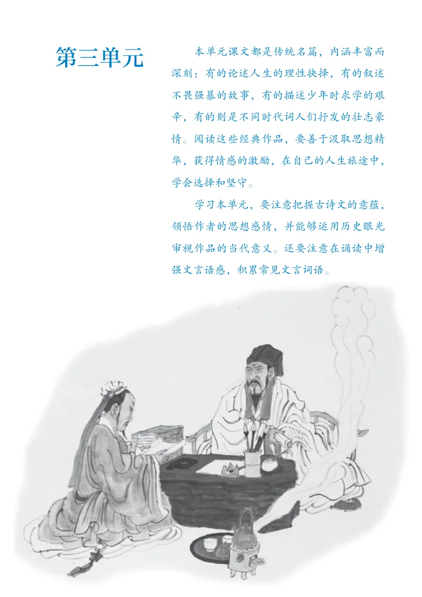
9 鱼我所欲也
返回文字内容 ↑10* 唐雎不辱使命
返回文字内容 ↑11 送东阳马生序
返回文字内容 ↑12 词四首
返回文字内容 ↑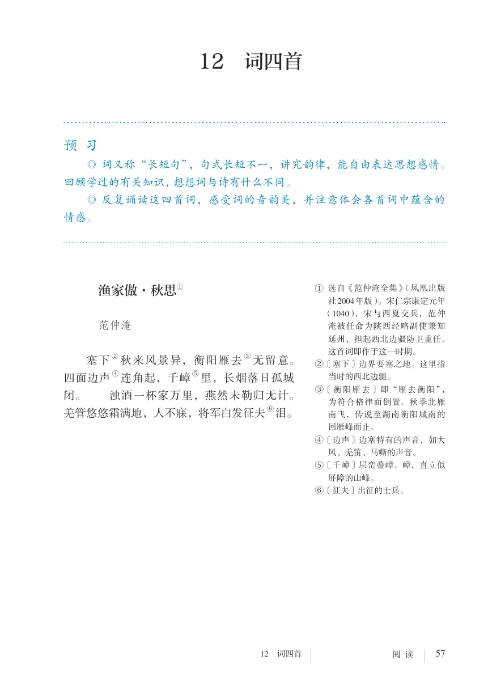
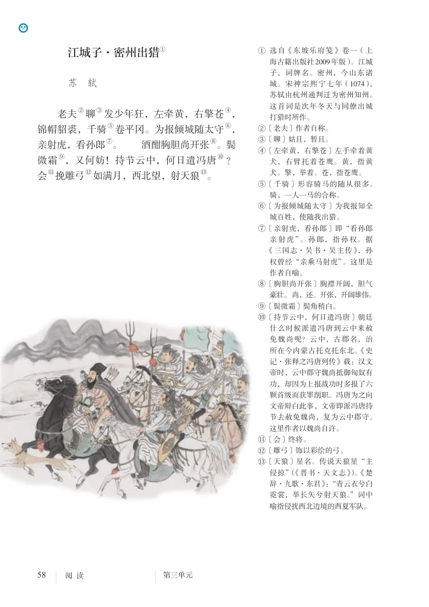
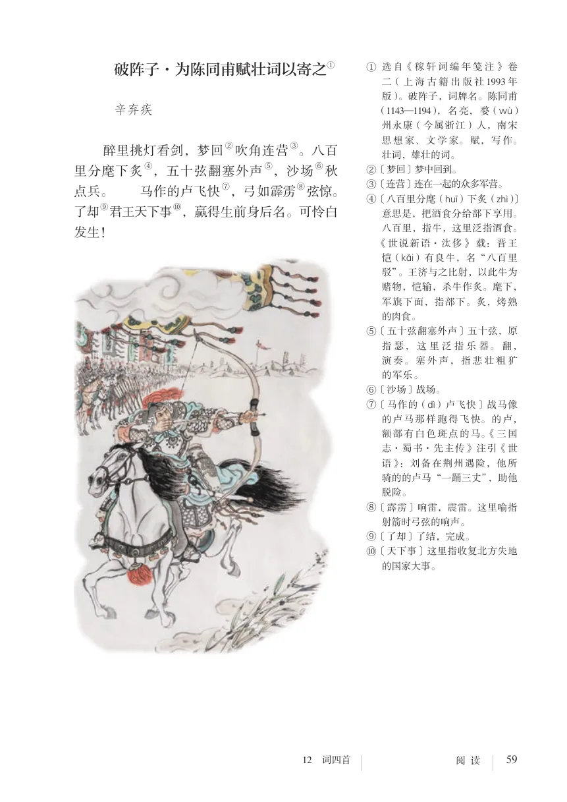
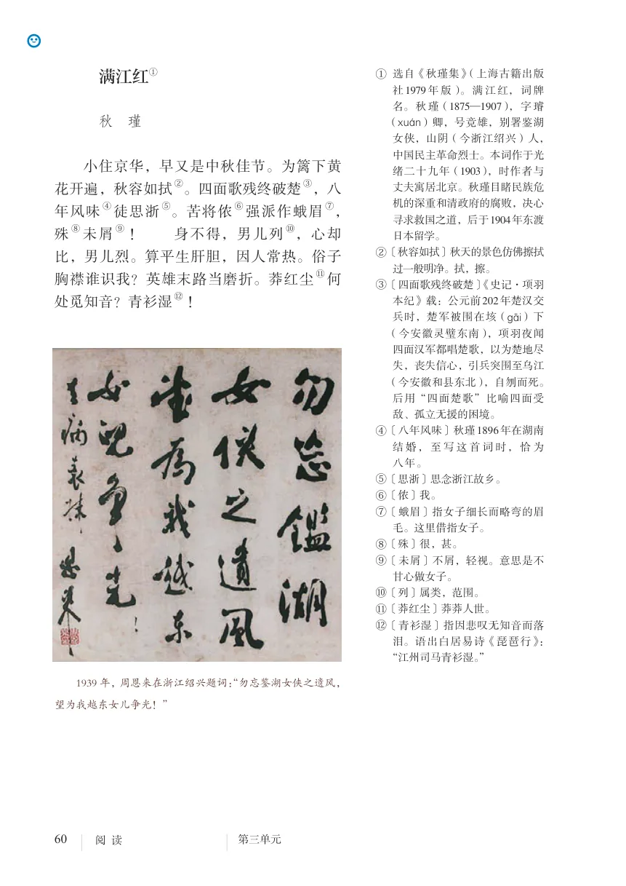
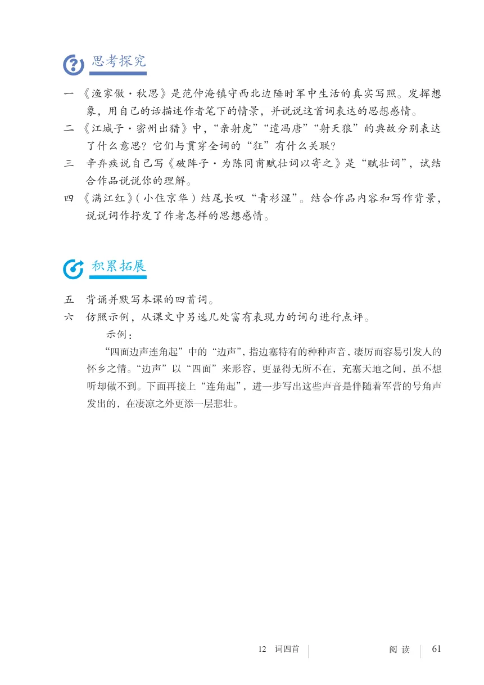
写作：布局谋篇
返回文字内容 ↑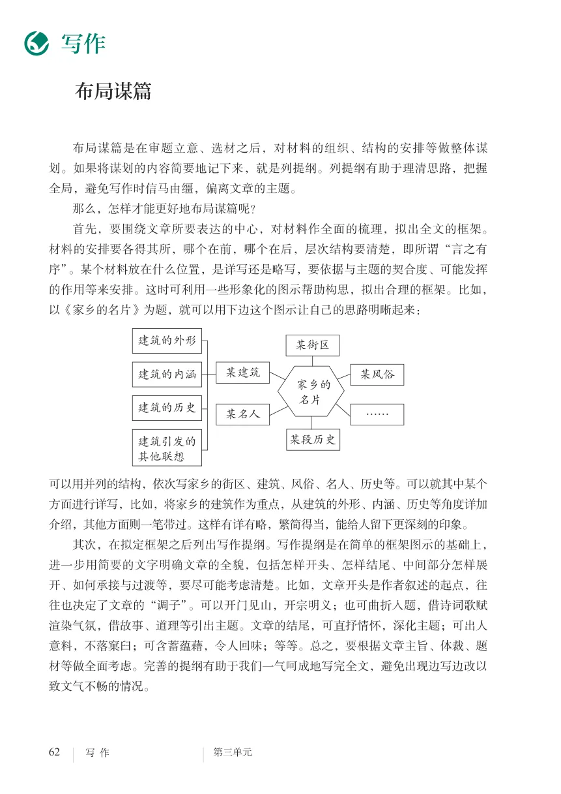
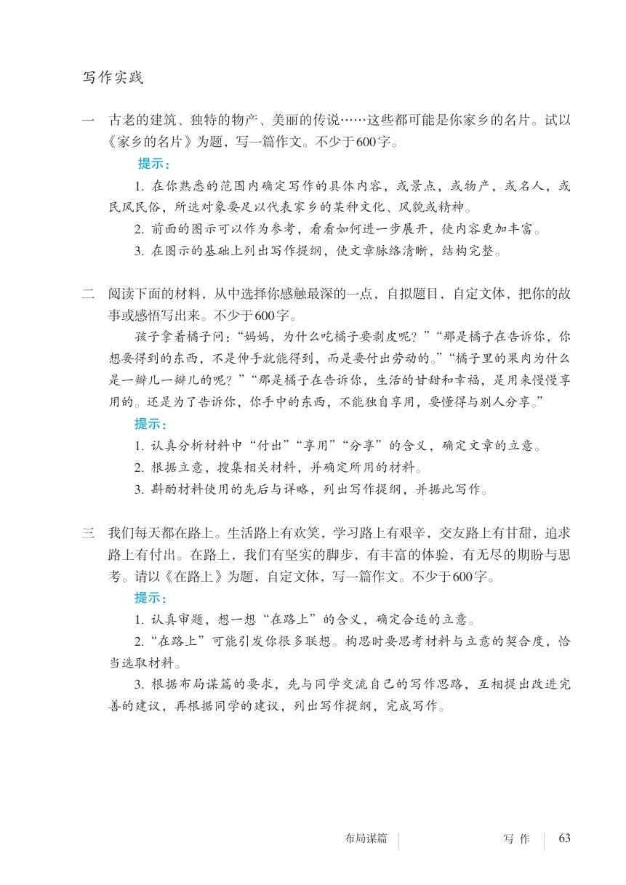
名著导读：《儒林外史》——讽刺作品的阅读
返回文字内容 ↑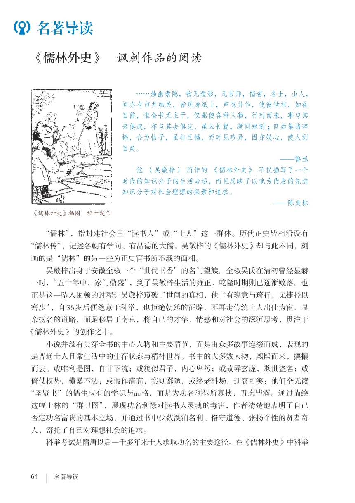
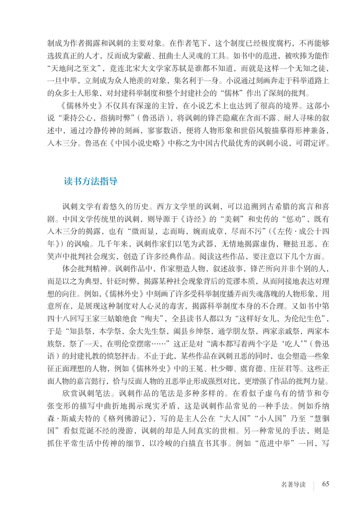

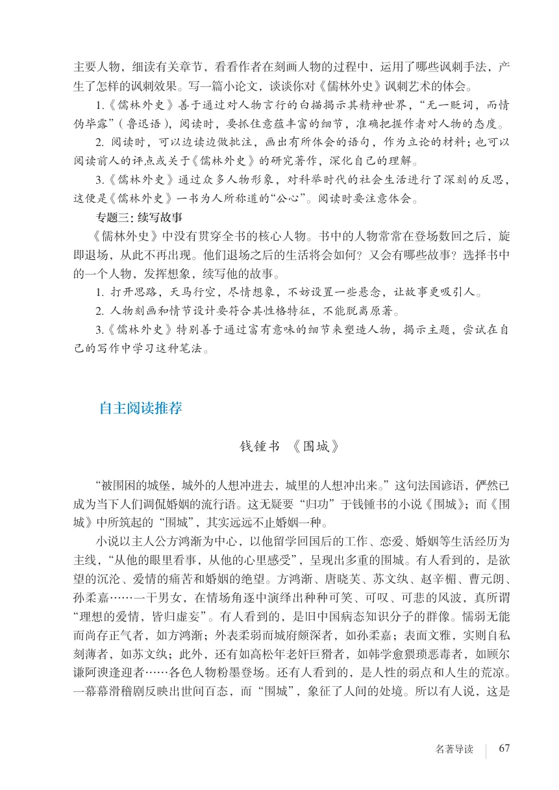
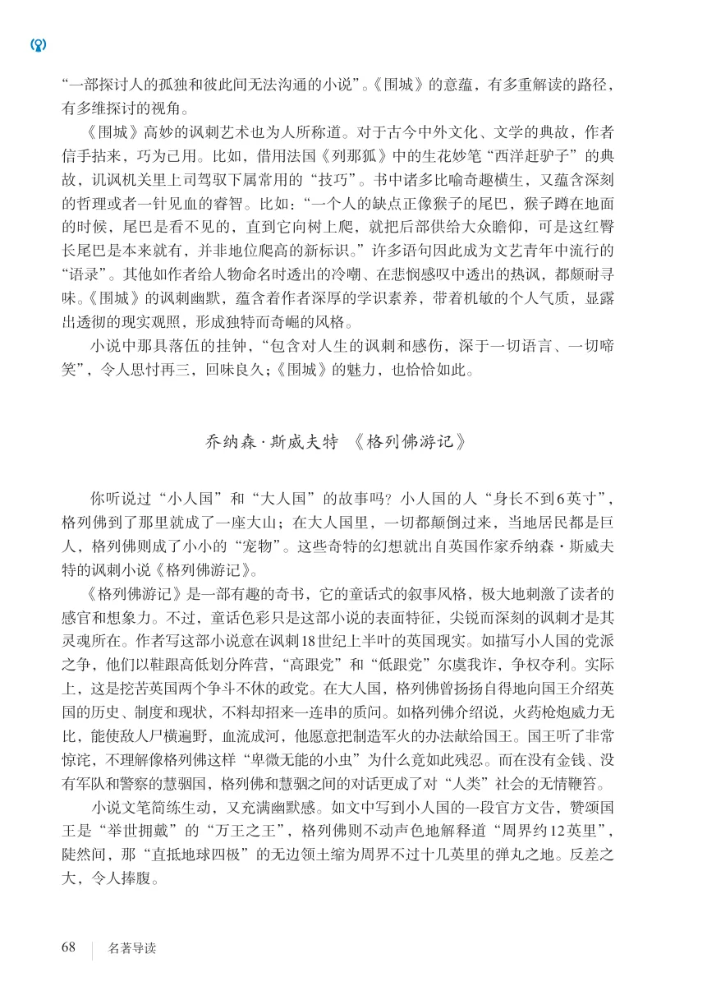
课外古诗词诵读
返回文字内容 ↑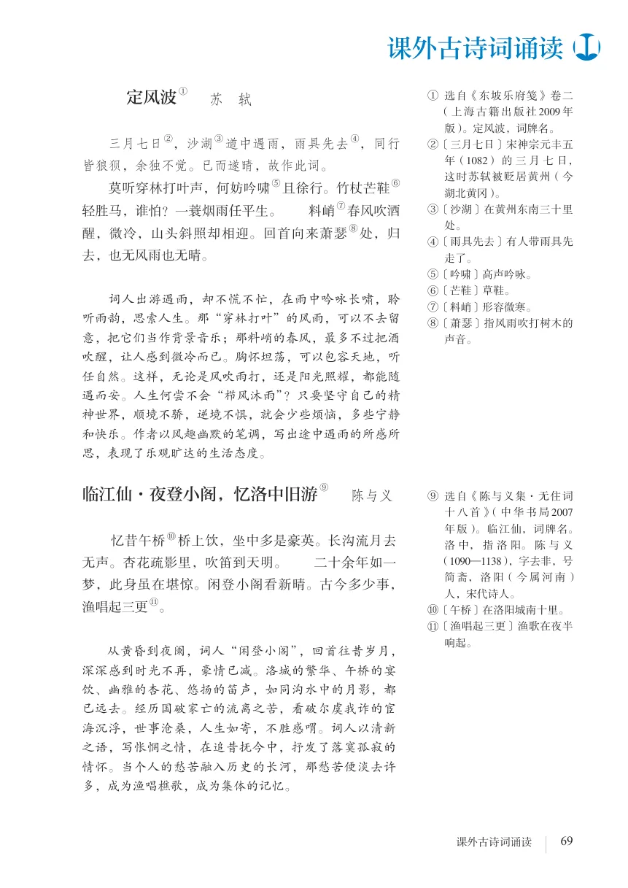
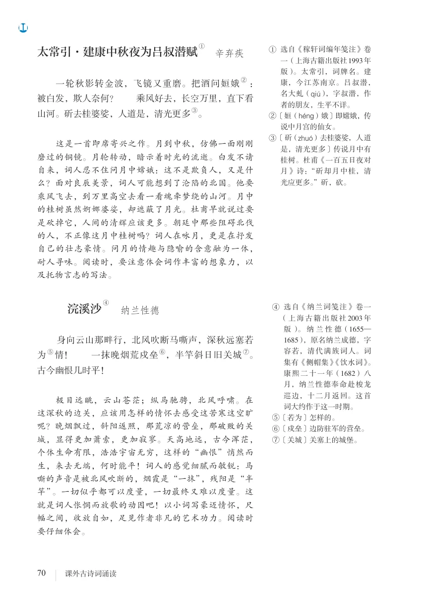